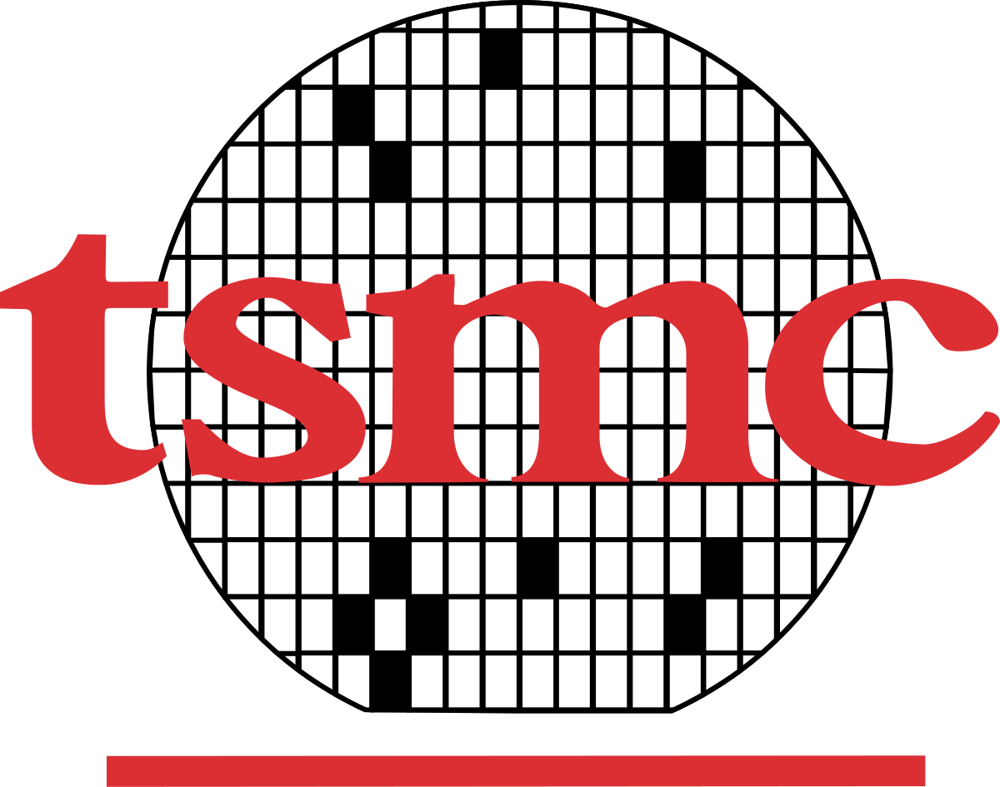

R&Dインターン
TSMC, Design Technology Platform (DTP)
- 2025 DTP Intern Conference Top 10 入選。テーマは LLM-driven LVS deck coding assistance と layout pattern constraint generation。
- multi-agent orchestration、LoRA-tuned LLM behavior、構造化仕様/設定生成を含む AI workflow コンポーネントを構築。
- 専有工程環境に必要な信頼性に注力し、追跡可能な出力、人間のレビュー、機密データ境界を意識。